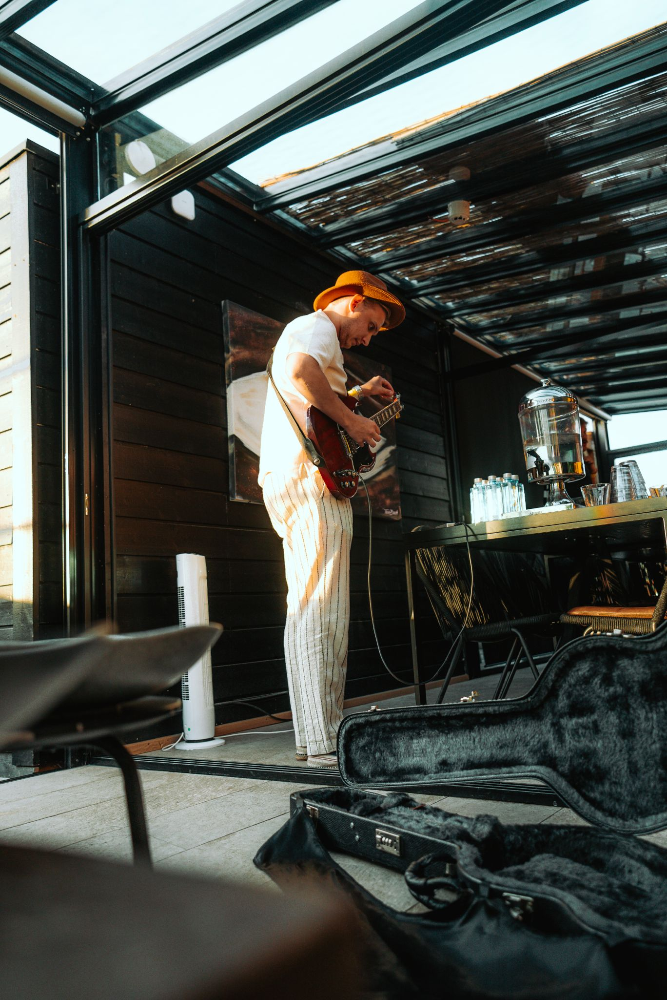

Olen tamperelainen musiikin tuottaja, miksaaja, masteroija, lauluntekijä ja artisti. Taustani pohjautuu vahvaan klassiseen musiikkikoulutukseen: olen opiskellut musiikkia yli kymmenen vuoden ajan Sibelius-opistossa. Pääsoittiminani ovat toimineet akustinen kitara, sähkökitara ja rummut, minkä lisäksi olen opiskellut musiikinteoriaa, pianonsoittoa ja laulua. Aloitin musiikin tuottamisen noin 16-vuotiaana EDM-musiikin parissa ja siirryin aktiiviseen tuottamiseen vuonna 2017. Tämän myötä laajensin työskentelyäni myös popin ja räpin suuntaan. Vuosien varrella olen rakentanut laajan genreosaamisen, jonka ansiosta tuotanto taipuu luontevasti EDM:stä poppiin, popista pop-räppiin ja aina alternative rockiin asti. Tuotoksiani on kuunneltu Spotifyssa yli 5 miljoonaa kertaa. Työskentelen kokonaisvaltaisesti projektien parissa: osassa kappaleista olen vastannut koko paketista tuotannosta miksaukseen ja masterointiin, kun taas osassa roolini on keskittynyt esimerkiksi pelkkään tuottamiseen tai miksaukseen. Tykkään käyttää musiikissani niin syntikoita kuin orgaanisia akustisia soittimia. Tavoitteeni on yhdistää tekninen osaaminen, vahva musiikillinen näkemys ja artistilähtöinen ajattelu jokaisessa projektissa. Alla soittolista kappaleista, joita olen ollut tekemässä
Julkaisen myös omaa musiikkia artistinimellä KIM.
Sähköposti: kimdkmusic@hotmail.com
Instagram: @kimpsukotilainen
TikTok: @kimkotilainen
Facebook: Kim Kotilainen